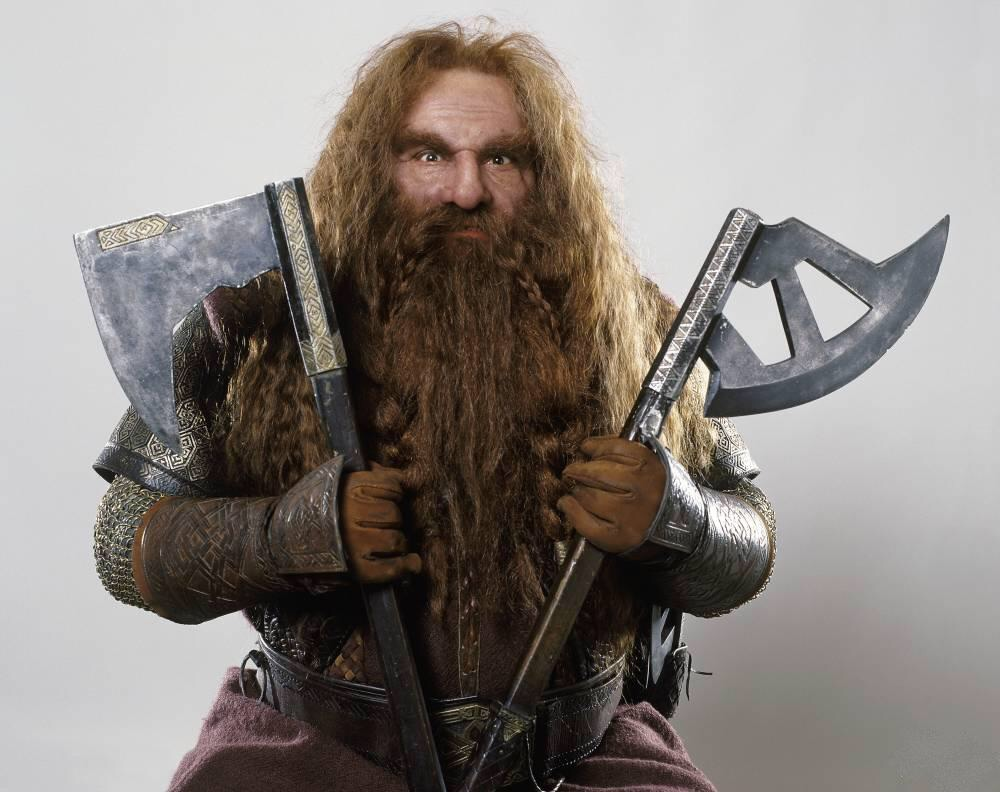

gimli

gimli, son of gloin
"I have looked the last upon that which was fairest. Henceforward I will call nothing fair, unless it be her gift." - Gimli, speaking of Galadriel
Gimli, son of Gloin, was a well-respected dwarf warrior in Middle-earth during the Great Years. He was a member of the Fellowship of the Ring, and was the only one of the dwarves to readily fight alongside elves in the war against Sauron at the end of the Third Age. After the defeat of Sauron, he was given lordship of the Glittering Caves at Helm's Deep.